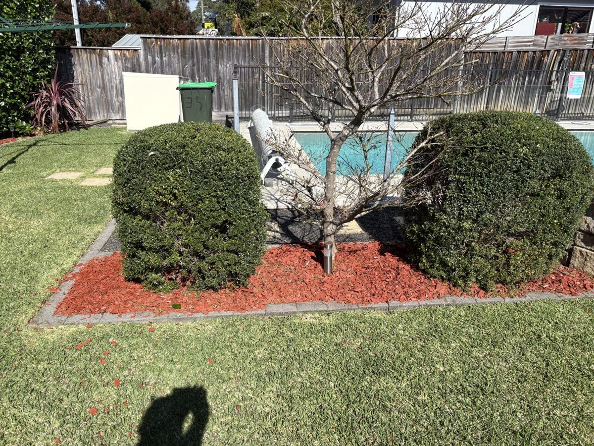
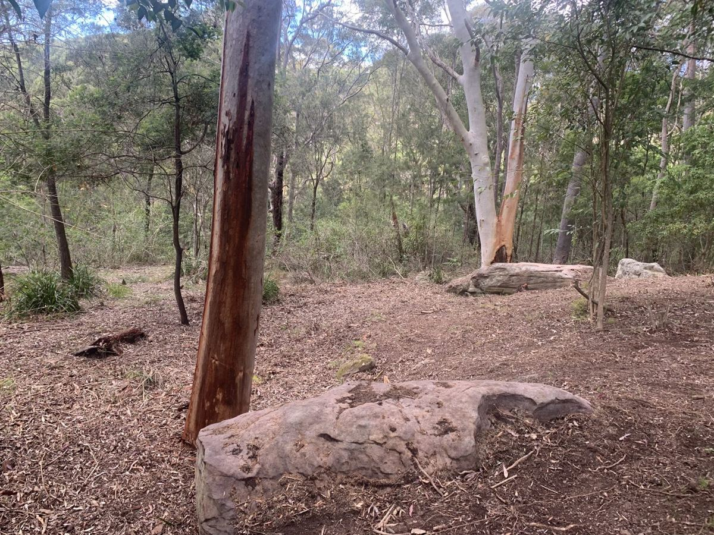
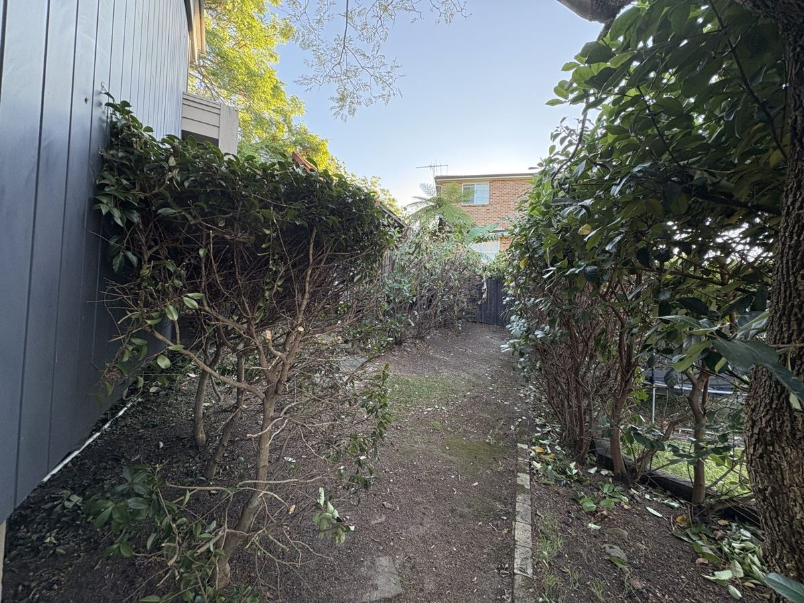
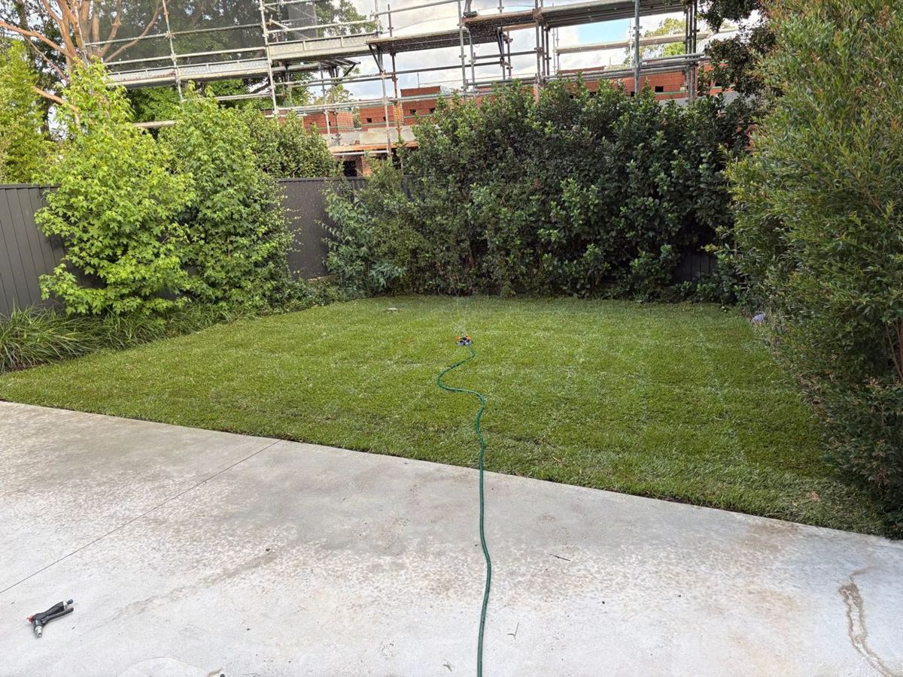
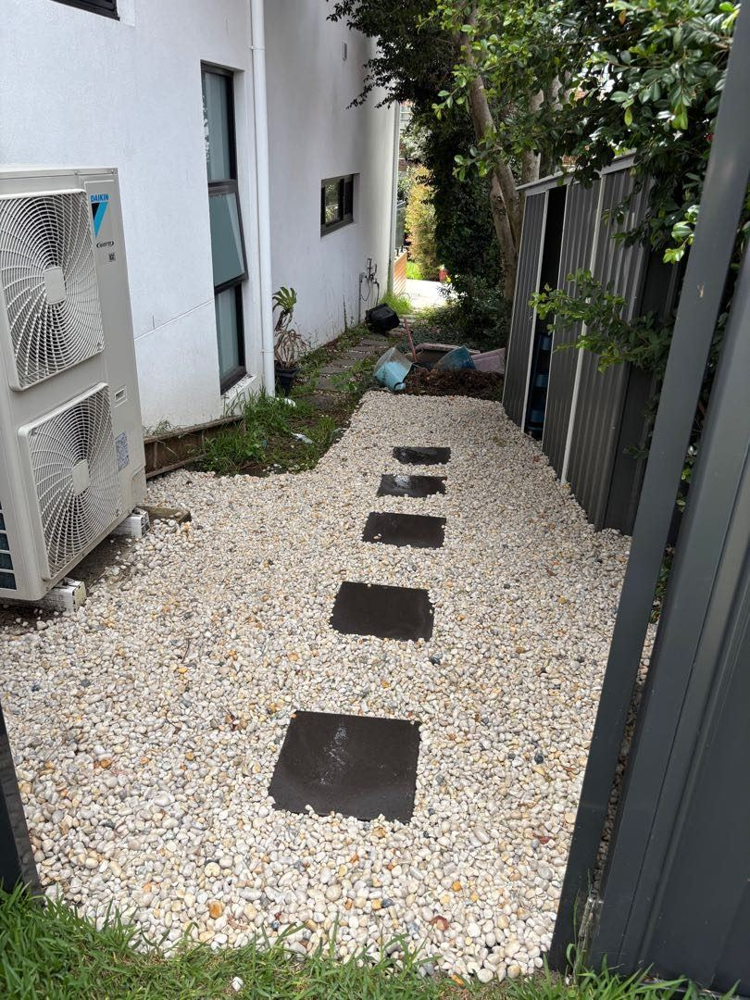

Every job on the list
Garden clean-ups, odd jobs and rubbish removal across the Upper North Shore. If your job isn't listed, call or email Ryan and ask.
Garden & lawn
From a quick mow to a full tidy-up of beds and borders.

Garden maintenance
Keeping beds, borders and garden areas neat.
Weed control
Pulling and clearing weeds from beds, paths and lawns.
Pruning and trimming
Shaping hedges, shrubs and overgrown plants.
Lawn mowing
Mowing front and back lawns.
Lawn and turf
General lawn care and turf work.
Basic garden jobs
The general garden tasks on your to-do list.
Trees & stumps
Cutting back, taking out and clearing up trees and stumps.

Tree pruning / removal
Cutting back or taking out unwanted trees.
Stump removal
Clearing leftover stumps from your yard.
Rubbish & small moves
Clearing out what you don't want and moving smaller loads.

Rubbish removal
Taking away unwanted rubbish and junk.
Garden rubbish removal
Removing green waste, branches and clippings.
Small moves
A hand with moving smaller loads and items.
Cleaning
Outdoor cleaning jobs that are easy to put off.

Pressure cleaning
Washing down driveways, paths and outdoor areas.
Gutter cleaning
Clearing leaves and debris out of gutters.
Window cleaning
Getting windows clean and clear.
Strip-outs, excavation & small jobs
Hands-on odd jobs around the house and yard.

Bathroom strip-outs
Stripping out old bathroom fittings and finishes.
Excavation
Digging and earth-moving work.
Basic painting and concreting
Straightforward painting and concrete jobs.
Got a job that's not listed?
Call or email Ryan to talk it through and book a time that suits you.